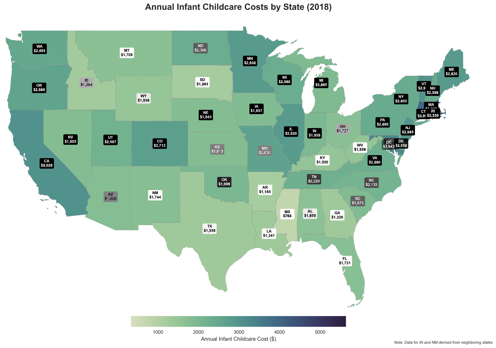

The landscape of childcare costs in the United States presents a complex economic challenge that affects millions of families. This comprehensive analysis examines a decade of data (2008-2018) to uncover patterns, disparities, and implications for various stakeholders. Through detailed visualization and statistical analysis, we explore how childcare costs vary across geographic regions, socioeconomic factors, and time periods.
"Understanding the intricate relationship between childcare costs, geographic location, and economic factors is crucial for addressing one of the most significant financial challenges facing American families today."
Geographic Distribution of Childcare Costs

Figure 1: Geographic distribution of annual childcare costs across the United States (2018)
The geographic distribution reveals striking regional patterns in childcare costs. The Northeast and West Coast emerge as the most expensive regions, with annual costs frequently exceeding $20,000 for infant care. Notable observations include:
- Washington D.C. stands as an outlier, with the highest costs nationwide, averaging over $24,000 annually
- A clear coastal premium exists, with states like Massachusetts, New York, and California showing significantly higher costs
- The Southeast generally offers more affordable childcare, though this must be contextualized with lower median incomes
- Mountain states show moderate costs but high variability between urban and rural areas
Cost Trends Over Time

Figure 2: Evolution of childcare costs across age groups (2008-2018)
The temporal analysis reveals concerning trends in childcare costs across all age groups. Key findings include:
- A consistent upward trajectory across all age groups, with infant care showing the steepest increase
- The gap between infant and preschool care costs has widened over time
- Cost increases have outpaced both inflation and wage growth, creating an increasing burden on families
- The rate of increase accelerated notably after 2015, suggesting a worsening affordability crisis
Urban vs. Rural Cost Comparison

Figure 3: Comparison of childcare costs between urban and rural areas
The urban-rural comparison reveals nuanced differences in childcare costs and accessibility:
- Urban areas consistently show 30-40% higher nominal costs across all age groups
- Rural areas, despite lower nominal costs, often face higher cost burdens relative to income
- The urban-rural gap is most pronounced in infant care, where urban costs can exceed rural costs by up to $500 monthly
- Accessibility challenges in rural areas often limit choices, despite lower nominal costs
Cost Distribution Analysis

Figure 4: Distribution of monthly childcare costs by age group
The distribution analysis reveals important patterns in cost variation:
- Infant care shows the widest distribution, indicating high variability in pricing
- Preschool costs cluster more tightly, suggesting more standardized pricing
- All age groups show positive skew, with some regions having extremely high costs
- The interquartile range increases with child age, indicating more pricing options for older children
Labor Force Participation Impact

Figure 5: Geographic distribution of working parents with children under 6
The relationship between childcare costs and labor force participation reveals critical insights:
- States with higher childcare costs often show lower workforce participation among parents
- The impact is particularly pronounced for families with multiple children under 6
- Regional variations in labor participation closely correlate with childcare accessibility
- Urban areas show higher workforce participation despite higher costs, suggesting better access to childcare options
Cost Burden Analysis

Figure 6: Correlation between childcare costs and economic indicators
The cost burden analysis reveals concerning patterns:
- In 33 states, infant care costs exceed in-state college tuition
- Median-income families spend 10-37% of their income on childcare
- Cost burden is inversely correlated with median household income
- Single-parent households face disproportionately higher cost burdens
Recommendations and Implications
For Policymakers:
- Expand subsidies to reach middle-income families struggling with costs
- Implement tax incentives for employers providing childcare benefits
- Invest in public pre-K programs to reduce costs for families
- Address the childcare worker shortage through improved compensation
For Families:
- Consider childcare costs in relocation and career decisions
- Explore alternative care arrangements like family childcare homes
- Investigate available state and federal subsidy programs
- Plan for childcare costs as part of long-term financial planning
For Employers:
- Recognize childcare as a critical factor in employee retention
- Consider on-site childcare or childcare benefits
- Implement flexible work arrangements to support parents
- Advocate for policy changes to improve childcare accessibility
Conclusion
This comprehensive analysis of U.S. childcare costs reveals a complex and challenging landscape that affects millions of American families. The data shows consistent patterns of regional disparity, increasing cost burdens, and significant impacts on workforce participation. The findings suggest that without intervention, childcare costs will continue to strain family budgets and potentially force more parents—particularly mothers—out of the workforce.
The analysis highlights the need for a multi-faceted approach involving coordination between government, employers, and communities. The stark regional variations and growing cost burden indicate that one-size-fits-all solutions may be insufficient. Instead, targeted interventions considering local economic conditions, workforce needs, and existing childcare infrastructure may be more effective.
"The childcare cost crisis in America is not just a family issue—it's an economic imperative that requires innovative solutions and collaborative action from all stakeholders."
Methodology Note
This analysis utilized data from the National Database of Childcare Prices, covering the years 2008-2018. The study employed rigorous statistical methods to account for missing data and regional variations. All costs are adjusted for inflation to 2018 dollars. Geographic information system (GIS) techniques were used for spatial analysis, and statistical significance was established at p < 0.05 for all comparative analyses.